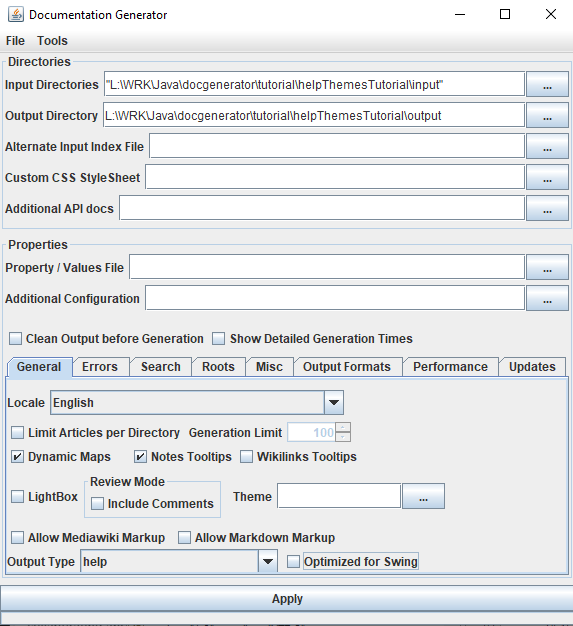
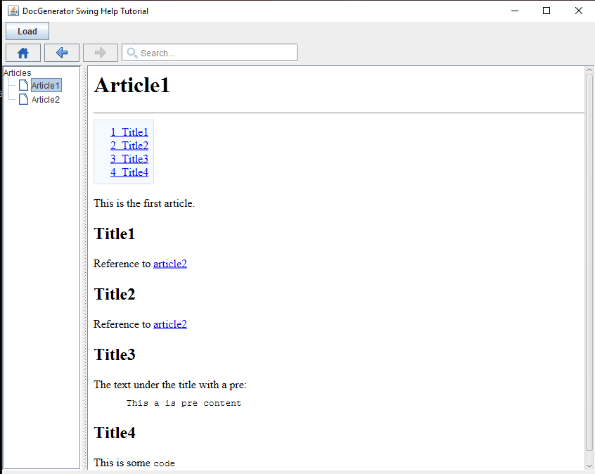
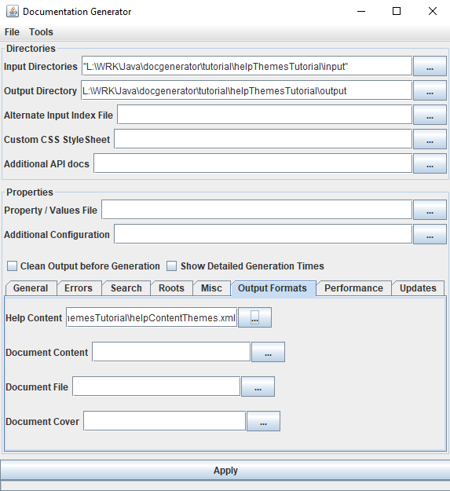
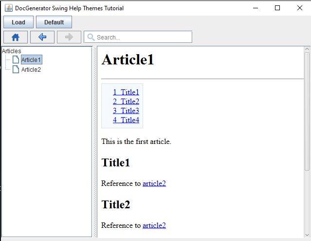
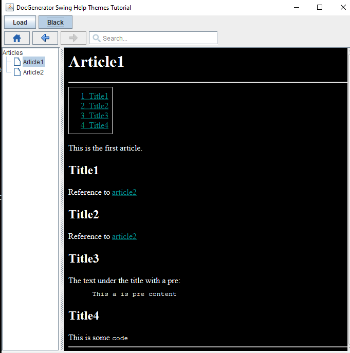

Home
Categories
Dictionary
Download
Project Details
Changes Log
What Links Here
How To
Syntax
FAQ
License
Help system Swing themes tutorial
1 Create the content of the wiki
2 Generate the help content
3 Create our Swing application
4 Create a dark theme
5 Generate the help content with our dark theme
6 Allow to switch the theme in our Swing application
6.1 Create the toggle button
6.2 Handle the switch
7 Switch between the themes
8 See also
2 Generate the help content
3 Create our Swing application
4 Create a dark theme
5 Generate the help content with our dark theme
6 Allow to switch the theme in our Swing application
6.1 Create the toggle button
6.2 Handle the switch
7 Switch between the themes
8 See also
This article is tutorial which explains how to produce and use a Help content with StyleSheet themes in a Swing application.
You will:
We will create the same wiki content as for the StyleSheet theme tutorial. We will have two articles in the wiki.
As for the Help system tutorial tutorial, we have a file named
In this case we will show the content in Swing but using the JavaFX engine.
We will have exactly the same code as for the Help system tutorial tutorial.
See the full source code for the example. Now the help system is integrated in our Swing application, and the following Window appear upon clicking on the "Load" menu item:
We will do exactly the same as for the StyleSheet theme tutorial.
We have the following StyleSheet theme for the example.
We now must specify the XML file which will specify this dark theme in our viewer. This XML file will be the Help content StyleSheet configuration, where we only need to specify the new dark theme and associate it with and id:
You will:
- Generate a zip file containing the help content, including custom StyleSheet themes
- Use this content to create a help system for a Swing application
Create the content of the wiki
Main Article: StyleSheet theme tutorial
We will create the same wiki content as for the StyleSheet theme tutorial. We will have two articles in the wiki.
Generate the help content
Let's generate our help content. Double-click on the jar file of the application and:- Input directories: Set your directory
- Output directory: Set another empty directory for the help content result
- Output type: Set "HELP" as the output type and uncheck the Optimized for Swing checkbox
- Click on "Apply"

As for the Help system tutorial tutorial, we have a file named
articles.zip at the same level as the output directory. In this case we will show the content in Swing but using the JavaFX engine.
Create our Swing application
As for the Help system tutorial tutorial, we will use the same code: a JFrame which will show the content of our help system upon clicking on a Menu item. First we will create our very simple application with a MenuBar but without our help system.We will have exactly the same code as for the Help system tutorial tutorial.
See the full source code for the example. Now the help system is integrated in our Swing application, and the following Window appear upon clicking on the "Load" menu item:

Create a dark theme
Main Article: StyleSheet theme tutorial
We will do exactly the same as for the StyleSheet theme tutorial.
We have the following StyleSheet theme for the example.
We now must specify the XML file which will specify this dark theme in our viewer. This XML file will be the Help content StyleSheet configuration, where we only need to specify the new dark theme and associate it with and id:
<helpContent> <styleSheets> <styleSheetTheme id="black" url="themeBlack.css"/> </styleSheets> </helpContent>Now the
themeBlack.css theme will be associated with the black id.
Generate the help content with our dark theme
Let's generate our help content. Double-click on the jar file of the application and:- Input directories: Set your directory
- Output directory: Set another empty directory for the help content result
- Output type: Set "HELP" as the output type and uncheck the Optimized for Swing checkbox
- Help content: Set "our XML file as the Help Content in the Output Format tab
- Click on "Apply"

Allow to switch the theme in our Swing application
We will add a toggle button in our code to allow to switch from the default theme to our new dark theme.Create the toggle button
The code to handle the toggle button is straightforward and not lined to our help API:public class SwingThemeJavaHelp extends JFrame { private SwingHelpContentViewer viewer = null; private JComponent view = null; private JToggleButton themeButton = null; private boolean isDefaultTheme = true; ... private void createLayout() { Container cont = this.getContentPane(); cont.setLayout(new BorderLayout()); view = new JPanel(); cont.add(view, BorderLayout.CENTER); JPanel toolbar = new JPanel(); toolbar.setLayout(new BoxLayout(toolbar, BoxLayout.X_AXIS)); JButton loadButton = new JButton("Load"); loadButton.addActionListener(new ActionListener() { @Override public void actionPerformed(ActionEvent e) { load(); } }); toolbar.add(Box.createHorizontalStrut(5)); toolbar.add(loadButton); toolbar.add(Box.createHorizontalStrut(5)); themeButton = new JToggleButton("Default"); themeButton.setEnabled(false); themeButton.addActionListener(new ActionListener() { @Override public void actionPerformed(ActionEvent e) { } }); toolbar.add(themeButton); cont.add(toolbar, BorderLayout.NORTH); } }We now have the following result for our application, but we still don't do anything when clicking on the toggle button:

Handle the switch
We will use the API to switch between the default theme to theblack theme:themeButton.addActionListener(new ActionListener() { @Override public void actionPerformed(ActionEvent e) { if (isDefaultTheme) { isDefaultTheme = false; themeButton.setText("Black"); viewer.setStyleSheetTheme("black"); // switch to the "black" theme } else { isDefaultTheme = true; themeButton.setText("Default"); viewer.resetStyleSheetTheme(); // reset to the default theme } } });
Switch between the themes
Now we can "switch between the themes. After clicking on the toggle, we have:
See also
- Tutorials: This article presents a list of tutorials
- Help system: This article explains how to use the JavaHelp-like feature of the tool
- Help Swing API: This article explains how to use the Help Swing API
- Help content StyleSheet configuration: This article explains how to configure the StyleSheet for the help content
×

Categories: JavaHelp | Tutorials